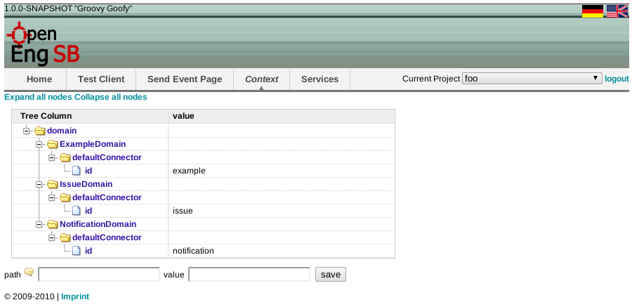

7.1. Goal
This tutorial shows how the event system in the OpenEngSB can be used. Therefore a log and a domain connector are created and configured. The context system in the OpenEngSB is used to define which connectors should be used and a simple event is used starting a rule.
7.2. Time to Complete
If you are already familiar with using services in OpenEngSB about 30 minutes. (see HowTo: First steps)
7.3. Prerequisites
This HowTo assumes you are already familiar with using and configuring services in OpenEngSB.
7.4. Create required connectors
Now one logging service and one email service should be created. Create one notification service as described in the previous example. Please name it "notification" instead of test1 or test2. Now create a logging service:
 logging service
logging service
7.5. Configure
Go to the "Context" page and configure the domains to use the connectors created:
 context overview7.6. Creating a rule
On the "Send Event Page" you can create and edit Rules. Therefore they have to be edited directly with a text editor. The initial system is empty and does not include any rules. To create a rule choose "new". Enter "hello1" into the rulename input field. Make also sure that "Rule" is selected in the type dropdown box.
As soon as you edit the content of the rule you can save your changes by clicking "save" or revert the changes by clicking "cancel". The name of the rule will automatically be prefixed with "org.openengsb". Please insert the following content into the text box and save the changes:
#
# My notification rule
#
# Sends "Hello World" notification to test recipient.
#
when
Event(name == "42")
then
example.doSomething("Hello World");
Notification n = new Notification();
n.setSubject("testsubject");
n.setMessage("testMessage");
n.setRecipient("testRecipient");
notification.notify(n);
Basically this rule reacts on all events (when clause). "log" is a helper class using the default log connector of the log domain to write information to a log file. Notification uses the default notification connector to inform a person. More details about this topic can be found in the user documentation at rules, domains and connectors.
To run a test the n.setRecipient property should be changed to a (e.g.) your email address.
7.7. Throw Event
Now we can throw an event and see if the rules work correctly. Stay on the "Send Event Page" enter for the contextId field "foo" and press send:
foo represents the name of the project. For a detailed description about projects and the context see the user documentation. You've should received a email via the rule to the email address configured previously). In addition using the "log:display" command in the OpenEngSB console should present (anywhere in the long log) a logging entry similar to the following (you have to search for the output of the LogService. The other fields can change):
 output
output
7.8. Next Steps
Congratulation. You've gained basic knowledge about the OpenEngSB and its functionality. Nevertheless, you've just touched the surface. As a next step it is recommended continue with further tutorials user manual and start exploring the world of the OpenEngSB.
| Prev | Home | Next |
| Chapter 6. HowTo - First steps with the OpenEngSB (Send mails via the OpenEngSB) | OpenEngSB Community | Chapter 8. HowTo - Create a connector for an already existing domain for the OpenEngSB |